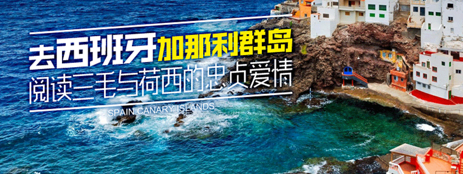
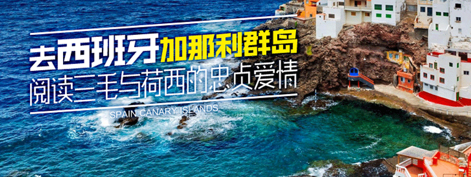

热门目的地
推荐攻略
[问答]三亚有什么接地气的美食？
当地老板姓喜欢吃的，你不一定接受的了。比如：槟榔包石灰，你敢吃否？ 不说别的，就在第一市场，就有很多当地人在卖这个东西。 当然，他们认为美味的，你可能觉得毛骨悚然，也很正常。
[问答]穿着和服逛京都，是一种什么体验？
如果说穿着和服游览京都是什么感觉，那么就不得不先说一说川端康成的名作《古都》。京都的祇园自古以来就是手工生产和服布料的中心，这部作品按照季节顺序，描写了京都四季变幻、如诗般的美丽景色，
[问答]怎么分清乱七八糟的日本交通？该怎么买票？
首先，要抛开中国和日本对于各种交通工具的叫法，这是造成误解的根本原因。在日本，所有跑在轨道上的车都叫“电车”，且能够互相接驳，只是分不同公司运营，一个公司既可以有“火车”，也可以有“地铁”，为了便于理解，